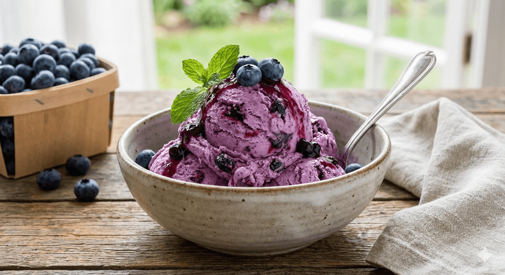
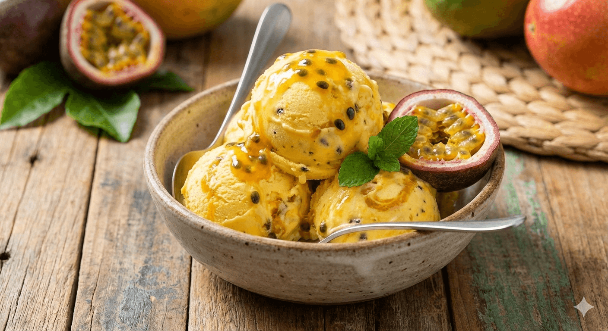
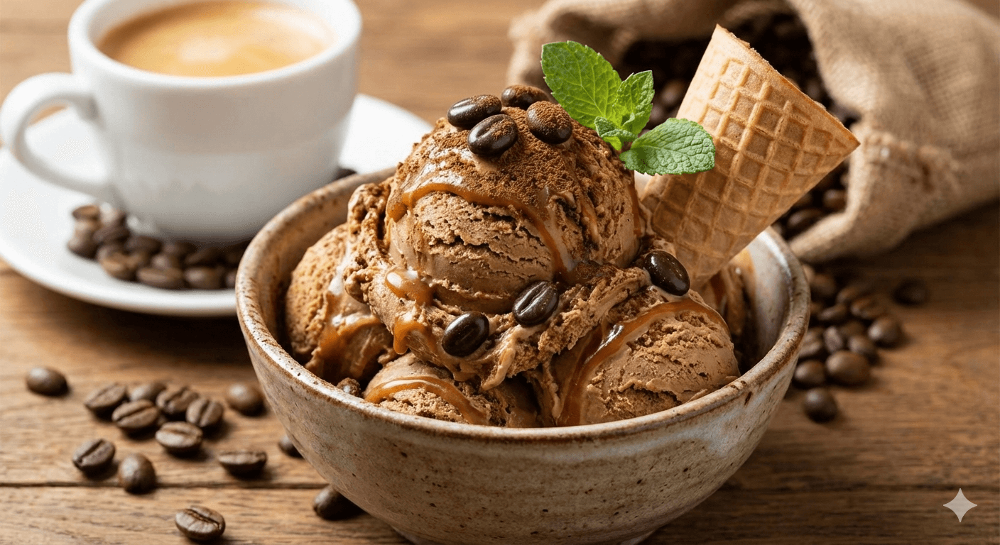
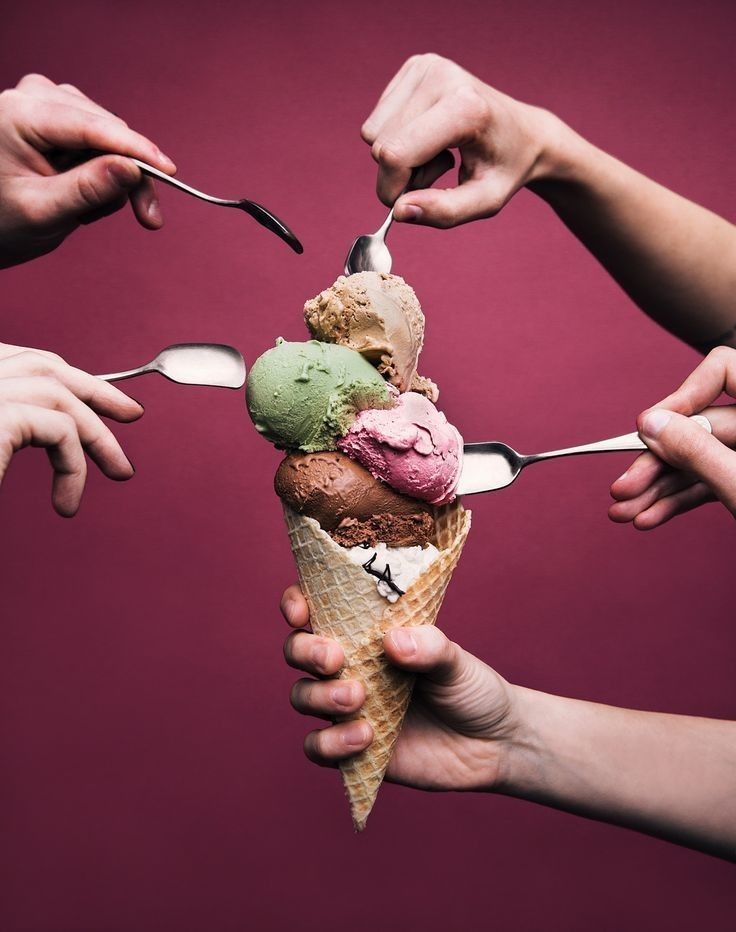
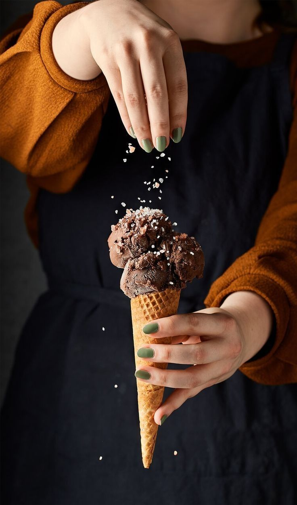
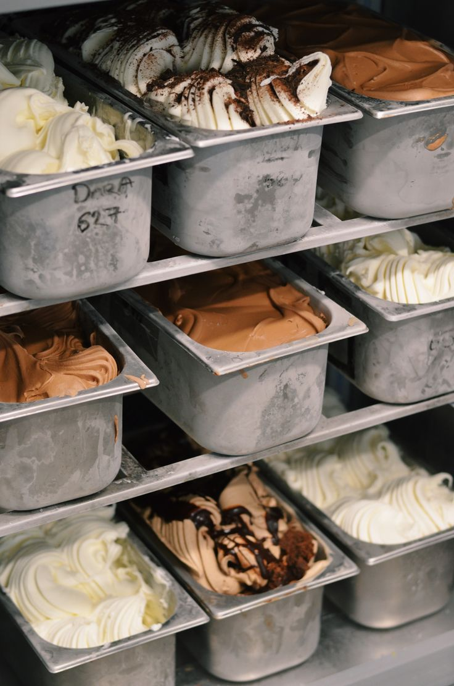
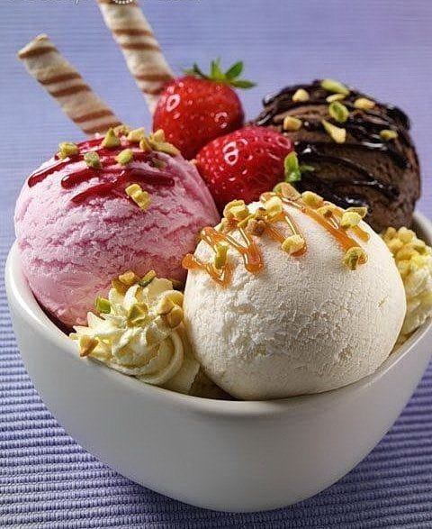
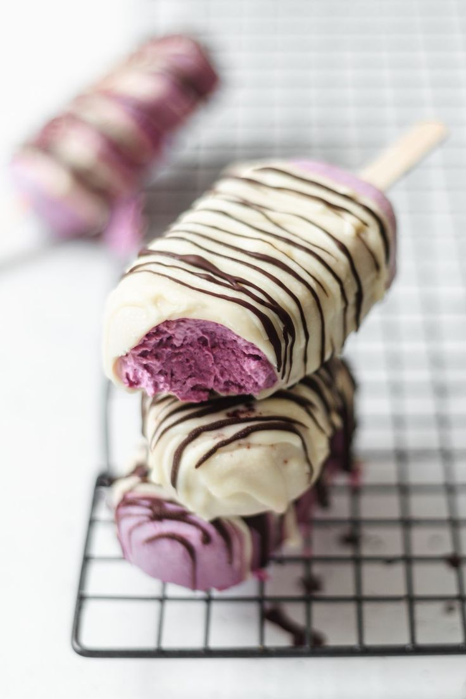
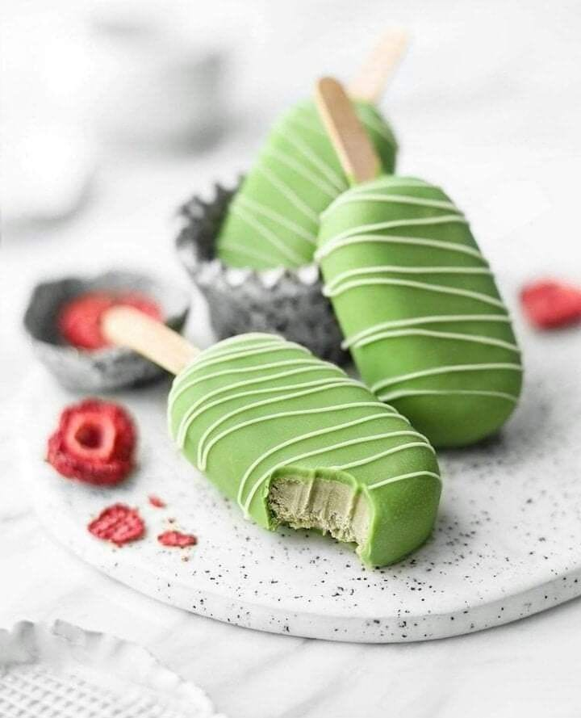

Bienvenidos a Gelato's 22
100% Natural: No utilizamos conservantes ni saborizantes artificiales, respetando lo que la naturaleza nos brinda. Elegirnos es apostar por la pasión, la maestría técnica y ese toque de magia que convierte un antojo cotidiano en un momento inolvidable.
PROMOCIONES
ARANDANOS

7,99 $El helado de arándano se caracteriza por un sabor intenso, refrescante y agridulce, con un color morado o azulado natural característico.
Su textura suele ser cremosa y suave. Es una opción popular para versiones saludables debido a su alto contenido en antioxidantes, vitaminas y sus propiedades antiinflamatorias.
MARACUYA

7,99 $El helado de maracuyá es un postre tropical, refrescante y exótico, caracterizado por su intenso sabor agridulce y color amarillo vibrante.
Elaborado comúnmente con pulpa natural de la fruta (pasión), azúcar y crema o yogur, ofrece una textura cremosa pero ligera, ideal para días calurosos.
COFFEE

7,99 $El helado de café es un postre sofisticado y cremoso que combina la intensidad aromática del café con una textura suave y mantecosa.
Se elabora infusionando la base de crema con granos de café, espresso o café soluble, ofreciendo un sabor equilibrado entre lo dulce, amargo y tostado, ideal para los amantes de la cafeína.
Nuestra Historia: El Legado de Gelato’s 22
Todo comenzó en el verano de 1922, en un pequeño callejón de Florencia, Italia. Allí, Don Alessandro decidió alejarse de lo industrial para perfeccionar el arte del batido lento, logrando una cremosidad natural inigualable basada en frutas frescas y lácteos de primera calidad. ¿Por qué 22? Nuestro nombre nació de un compromiso con la frescura: Alessandro utilizaba una máquina manual que solo procesaba 22 litros por tanda para garantizar la perfección en cada bocado. Lo que comenzó como un límite técnico se convirtió en nuestro sello de exclusividad y calidad.
El Secreto de nuestra Calidad
Hoy, un siglo después, mantenemos intacta esa filosofía artesanal con ingredientes Reales, Seleccionamos frutas de temporada, café de tostado perfecto y lácteos seleccionados.
Batido Preciso, Evitamos el exceso de aire para ofrecer una textura densa y sedosa que estalla en el paladar.
Algunos Productos:





